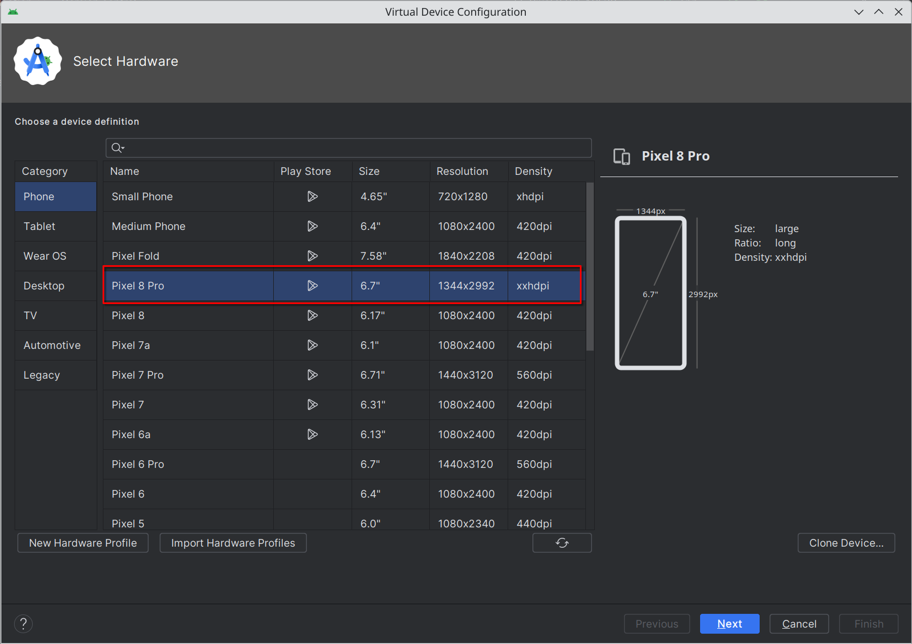
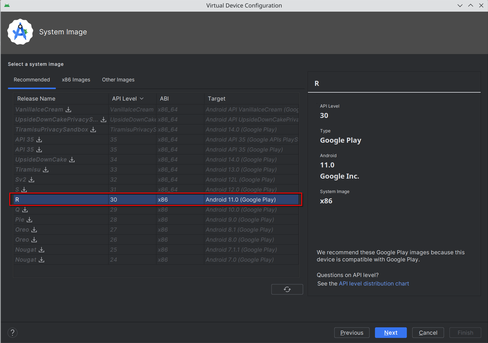

Local setup#
Install CRAB#
First you should install poetry, a modern python dependency management tool.
Then pull the crab repo and install:
git clone https://github.com/camel-ai/crab
cd crab
poetry install -E client
Install Ubuntu VM#
IMPORTANT: If you are using an Ubuntu VM, the Python version in the VM must match the Python version on the host machine. If you follow this instruction to install Ubuntu, the Python version in the VM will be 3.10.12. Consider using conda or pyenv to install the same Python version on the host machine.
Install virt-manager. If you are using Ubuntu or Debian, try sudo apt install virt-manager.
Download Ubuntu 22.04 image, then create a new machine with at least 8G RAM and 30G disk in virt-manager using the image. Follow the instruction and complete the installation. (It’s better to use crab as the main user name.)
After install Ubuntu, you should install crab-server on it and do necessary initilization. In Ubuntu VM, run
git clone https://github.com/camel-ai/crab.git ~/crab/
cd ~/crab/crab-benchmark-v0/scripts
chmod +x ubuntu_env_init.sh
./ubuntu_env_init.sh
The VM will reboot after initilization. After rebooting, remember its ip address.
Install ADB#
Download and install ADB from its official website.
Install Android Emulator#
You can use emulators in Android Studio to simulate an Android device if you don’t want to use a physical one.
To create a new virtual device, open Android Studio and use its built-in device manager to create a Pixel 8 Pro with system image release “R”.
Note that the benchmark on our side runs on a Google Pixel 8 Pro with system image release “R”. However, cases are noticed that Google API Level 30 may not work properly when trying to enable USB debugging mode. If such issues are encountered, you can try switch to releases of lower API levels (e.g. “Q”).


Then you can boot the device. To check if it’s all set, run
adb devices
You should see the device in the list.
Important: ADB won’t work normally if you see an
unauthorizedtag after the device ID. To solve this, enable both the developer mode and USB debugging mode in the device.